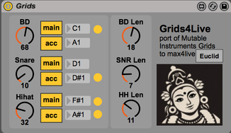

A topographic drum sequencer in Ableton Live
Grids is the topographic drum sequencer Eurorack module from Mutable Instruments, by Émilie Gillet. Grids for Max for Live is a port of the module's own code into a Max for Live device: it plays kick, snare and hi-hat notes (and their accents) into your Live set, from a map of rhythms you move through with two knobs.

Install
Drop Grids.amxd into your Live set or your User Library, and have fun. It needs Live with Max for Live.
Use
As it is mostly a port of the Eurorack module, most of the original manual applies, except the CV inputs, the clock input, tap tempo and the other things that make no sense in a DAW: the device follows Live's transport.
Part density
The three knobs on the left set the density of the kick, the snare and the hi-hat.
Note outputs
The main toggle of each part turns its notes on. Acc (accent) turns on its accent notes in drum mode; in euclidean mode the accent output plays a note each time the part's euclidean loop comes back to its start.
The numbers on the right are the MIDI notes of each part and its accent. By default: kick, snare and closed hi-hat, and for the accents low tom, clap and open hi-hat. Change them to suit your kit.
Drum settings
Map X and Map Y are the core of Grids: they move smoothly across the map of rhythms. Chaos adds random variation.
Euclidean settings
In euclidean mode the knobs on the right set the length of each part, from 1 to 32 steps.
Automate the knobs with Max for Live's LFO: that is where the fun begins.
Changes
- 2014-09-26: code clean-up, several instances work together, a better UI.
- 2014-09-25: euclidean mode fixed, a reset added.
- 2014-09-24: the code reworked, changes in the UI.
- 2014-09-23: rewritten as a C external, which fixes the sync.
- 2014-09-18: the first version, in JavaScript.